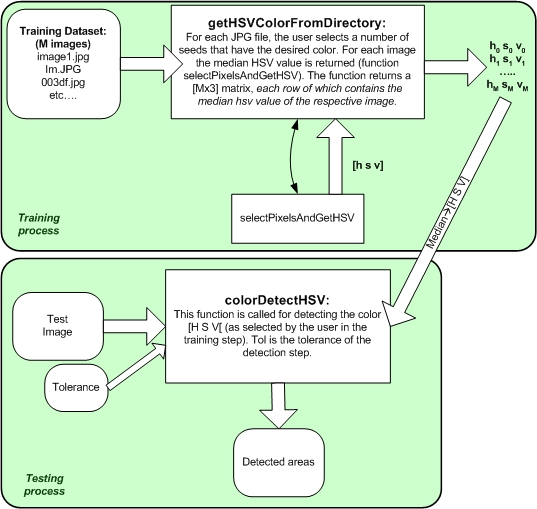

Matlab Color Detection Software |
Theodoros Giannakopoulos Department of Informatics and Telecommunications Univarsity of Athens, Greece website: www.di.uoa.gr/~tyiannak |
Introduction
The provided Matlab functions demonstrate a simple method for training and testing a color detection system. In general, a color detection algorithm searches an image for pixels that have a specific color. In this demo the HSV color space has been used, instead of the RGB space. According to that model, H(ue) dimension represents the "color", S(aturation) dimension represents the dominance of that color and the V(alue) dimension represents the brightness. Therefore, the color detection algorithm can search in terms of color position and color "purity", instead of searching for specific RGB values.
We have to note here, that in order to detect the desired color, it is needed to define a tolerance in each HSV dimension. For example a tolerance equal to 0.050 in the H dimension means that the algorithm will detect pixels whose H value has a distance (from the desired value) less than 0.050. In Figure 1 an example of applying the color detection algorithm is presented. In particular, we have selected to detect the color [0.50 0.60 0.70], with a tolerance of 0.10 in the H dimension and 0.50 in the S dimension (no limitation in the V dimension). In that example we suppose that we already know the color we are looking for. In general that is not the case, though: we may want to detect specific areas (e.g. skin color, sky color etc), without knowing the color of those areas. For this purpose, a training step is needed, according to which the user (manually) selects areas from known images. Then the average hsv values of those areas is computed and finally used by the color detection algoirith. In Figure 2, the method architecture is displayed. |
Figure 1 |


Figure 2
Training
For training the color detection scheme (i.e. for calculating the average HSV values of your objects of interest), you just have to run the getHSVColorFromDirectory() function on an known set of JPG images, stored all in a specific directory. For exaple:
HSV = getHSVColorFromDirectory('train');
This will open all JPG images in "train" folder and for each image you will be prompt to select small (5x5) areas of interest (by left clicking), as shown in Figure 3. When you have selected enough seeds (e.g. 10), right click anywhere in the image, in order to continue with the next image. This process will continue until all images are processed. The returned value (HSV) is a Mx3 matrix (M is the number of images): each row of that matrix corresponds to the median hsv value of the selected areas in the respective image. Therefore, by taking the average, or median of that matrix, you get an estimation of the hsv value you are searching for. Now, you are ready to go through the color detection process.


Figure 3: The small areas represent the already selected (by sinlge right-clicks of the mouse) seeds.
For the specific example the returned HSV value is: [0.1312 0.6647 0.9285], which represents to the color on the right.
Color Detection:
After the average hsv value of the color of interest is calculated (see above) simply call the colorDetectHSV() function as follow:
colorDetectHSV('balls.jpg', median(HSV), [0.05]);
This will detect all pixels of balls.jpg whose H value has a distance of less than 0.050 from the given color (2nd argument). If you want to specify tolerance for all 3 dimensions simply write:
colorDetectHSV('balls.jpg', median(HSV), [0.05 0.5 0.50]);
NOTE: In general the tolerance to the V dimension should be quite high, since this has nothing to do with the color or the color purity (or use no tolerance, which means no limitation).